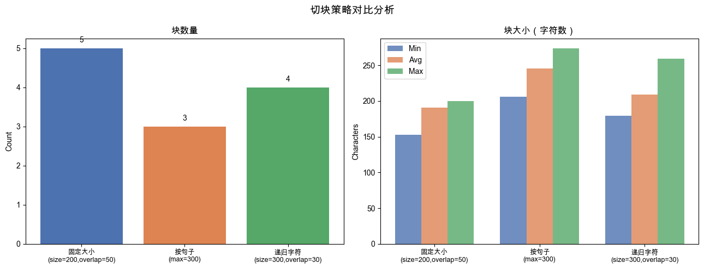

第4章 RAG — 01 文档切块（Chunking）#
RAG（Retrieval-Augmented Generation，检索增强生成）的第一步是把文档切成小块（chunk）供检索。 切块策略直接影响检索质量：块太大会引入噪音，块太小会丢失上下文。
本节涵盖四种常见的切块策略：
策略 |
特点 |
|---|---|
固定大小切块 |
简单高效，适合均匀文本 |
按句子切块 |
保留句子完整性，语义更连贯 |
递归字符切块 |
LangChain 默认方式，优先按段落、再按句子、最后按字符 |
语义切块 |
用 LLM 识别主题边界，质量最高，成本最高 |
import re
import json
import os
import sys
# 将项目根目录加入路径，以便引用 utils
sys.path.insert(0, os.path.join(os.path.dirname(os.path.abspath('__file__')), '..', '..'))
from dotenv import load_dotenv
load_dotenv()
import litellm
litellm.drop_params = True
def _safe_complete(**kw):
_m = kw.get('model', '')
if any(_m.startswith(p) for p in ('openai/gpt-5','openai/o1','openai/o3','openai/o4')):
kw.pop('temperature', None)
return litellm.completion(**kw)
MODEL = os.getenv("LLM_MODEL", "openai/gpt-4o-mini")
print(f"使用模型: {MODEL}")
def chat(messages, model=MODEL, temperature=0.0):
"""统一的 LLM 调用入口"""
response = litellm.completion(
model=model,
messages=messages,
temperature=temperature,
)
return response.choices[0].message.content
# gpt-5/o系列不支持自定义temperature值，统一用安全wrapper
def _c(**kw):
_m = kw.get('model', MODEL)
if any(_m.startswith(p) for p in ('openai/gpt-5','openai/o1','openai/o3','openai/o4')):
kw.pop('temperature', None)
return litellm.completion(**kw)
使用模型: openai/gpt-5-mini
示例文本#
以下是一段关于人工智能发展的中文示例文本，贯穿本节所有示例。
SAMPLE_TEXT = (
"人工智能（Artificial Intelligence，简称AI）是计算机科学的一个重要分支，"
"致力于研究、开发能够模拟、延伸和扩展人类智能的理论、方法和技术。\n"
"自20世纪50年代图灵提出\u201c机器能思考吗\u201d这一问题以来，人工智能已经历经数十年的发展。\n\n"
"早期的人工智能研究主要集中在符号逻辑和专家系统上。专家系统通过将领域专家的知识编码为规则，"
"使计算机能够在特定领域做出与专家相当的决策。\n"
"然而，这类系统的知识获取瓶颈和脆弱性限制了其广泛应用。进入20世纪80年代，机器学习开始兴起，"
"研究者们转向让机器从数据中自动学习规律。\n\n"
"深度学习是机器学习的一个子领域，以人工神经网络为核心，通过多层非线性变换来学习数据的层次化表征。\n"
"2012年，AlexNet在ImageNet竞赛中以大幅优势取得冠军，标志着深度学习时代的到来。\n"
"此后，卷积神经网络（CNN）在计算机视觉领域取得了突破性进展，循环神经网络（RNN）及其变体LSTM被广泛应用于自然语言处理任务。\n\n"
"2017年，Google提出了Transformer架构，彻底改变了自然语言处理领域的格局。\n"
"基于Transformer的预训练语言模型，如BERT、GPT系列，通过在大规模语料上进行自监督学习，获得了强大的语言理解和生成能力。\n"
"2022年底，OpenAI发布的ChatGPT引发了全球对大语言模型（LLM）的广泛关注，将AI推向了前所未有的高度。\n\n"
"当前，人工智能已广泛应用于医疗诊断、自动驾驶、智能客服、内容创作等众多领域。\n"
"大模型的出现使得通用人工智能（AGI）的讨论再度升温，研究者们正在探索如何让AI系统具备更强的推理能力、"
"更好的可解释性以及更高的安全性。\n"
"未来，随着算力的持续提升和数据的不断积累，人工智能将在更多领域发挥不可替代的作用。"
)
print(f"示例文本总字符数: {len(SAMPLE_TEXT)}")
print(f"\n文本预览（前100字符）:")
print(SAMPLE_TEXT[:100])
示例文本总字符数: 753
文本预览（前100字符）:
人工智能（Artificial Intelligence，简称AI）是计算机科学的一个重要分支，致力于研究、开发能够模拟、延伸和扩展人类智能的理论、方法和技术。
自20世纪50年代图灵提出“机器能思考
第一节：固定大小切块（Fixed-size Chunking）#
最简单的切块方式：按字符数切割，允许相邻块之间有一定重叠（overlap）以保留上下文。
chunk_size：每个块的最大字符数overlap：相邻块的重叠字符数，避免跨块信息断裂
def fixed_size_split(text, chunk_size=200, overlap=50):
"""
固定大小切块
:param text: 输入文本
:param chunk_size: 每块最大字符数
:param overlap: 相邻块重叠字符数
:return: List[str]
"""
chunks = []
start = 0
step = chunk_size - overlap # 每次前进的步长
while start < len(text):
end = min(start + chunk_size, len(text))
chunks.append(text[start:end])
if end == len(text):
break
start += step
return chunks
# 演示：chunk_size=200, overlap=50
fixed_chunks = fixed_size_split(SAMPLE_TEXT, chunk_size=200, overlap=50)
print(f"切块参数: chunk_size=200, overlap=50")
print(f"共切出 {len(fixed_chunks)} 个块\n")
print("=" * 50)
for i, chunk in enumerate(fixed_chunks[:2]):
print(f"\n--- Chunk {i+1} (长度={len(chunk)}) ---")
print(chunk)
print("\n... (仅展示前2个块) ...")
切块参数: chunk_size=200, overlap=50
共切出 5 个块
==================================================
--- Chunk 1 (长度=200) ---
人工智能（Artificial Intelligence，简称AI）是计算机科学的一个重要分支，致力于研究、开发能够模拟、延伸和扩展人类智能的理论、方法和技术。
自20世纪50年代图灵提出“机器能思考吗”这一问题以来，人工智能已经历经数十年的发展。
早期的人工智能研究主要集中在符号逻辑和专家系统上。专家系统通过将领域专家的知识编码为规则，使计算机能够在特定领域做出与专家相当的决策。
然而，这类系
--- Chunk 2 (长度=200) ---
。专家系统通过将领域专家的知识编码为规则，使计算机能够在特定领域做出与专家相当的决策。
然而，这类系统的知识获取瓶颈和脆弱性限制了其广泛应用。进入20世纪80年代，机器学习开始兴起，研究者们转向让机器从数据中自动学习规律。
深度学习是机器学习的一个子领域，以人工神经网络为核心，通过多层非线性变换来学习数据的层次化表征。
2012年，AlexNet在ImageNet竞赛中以大幅优势取得冠军，标志着
... (仅展示前2个块) ...
第二节：按句子切块（Sentence-based Chunking）#
中英文句子以 。！？.!? 等标点结束。按句子切块能保留语义完整性，
但单个句子可能过短，因此设置 max_chunk_size 将多个句子合并为一个块。
def split_by_sentences(text, max_chunk_size=300):
"""
按句子切块：先按中英文句末标点拆分句子，再合并到 max_chunk_size 以内。
:param text: 输入文本
:param max_chunk_size: 每块最大字符数
:return: List[str]
"""
# 用正则在句末标点后拆分，保留标点
sentences = re.split(r'(?<=[。！？.!?])\s*', text)
sentences = [s.strip() for s in sentences if s.strip()]
chunks = []
current_chunk = ""
for sentence in sentences:
# 如果加入当前句子后超过上限，先保存当前块
if current_chunk and len(current_chunk) + len(sentence) > max_chunk_size:
chunks.append(current_chunk.strip())
current_chunk = sentence
else:
current_chunk += sentence
if current_chunk.strip():
chunks.append(current_chunk.strip())
return chunks
# 演示
sentence_chunks = split_by_sentences(SAMPLE_TEXT, max_chunk_size=300)
print(f"切块参数: max_chunk_size=300")
print(f"共切出 {len(sentence_chunks)} 个块\n")
print("=" * 50)
for i, chunk in enumerate(sentence_chunks[:3]):
print(f"\n--- Chunk {i+1} (长度={len(chunk)}) ---")
print(chunk)
print("\n... (仅展示前3个块) ...")
切块参数: max_chunk_size=300
共切出 3 个块
==================================================
--- Chunk 1 (长度=257) ---
人工智能（Artificial Intelligence，简称AI）是计算机科学的一个重要分支，致力于研究、开发能够模拟、延伸和扩展人类智能的理论、方法和技术。自20世纪50年代图灵提出“机器能思考吗”这一问题以来，人工智能已经历经数十年的发展。早期的人工智能研究主要集中在符号逻辑和专家系统上。专家系统通过将领域专家的知识编码为规则，使计算机能够在特定领域做出与专家相当的决策。然而，这类系统的知识获取瓶颈和脆弱性限制了其广泛应用。进入20世纪80年代，机器学习开始兴起，研究者们转向让机器从数据中自动学习规律。
--- Chunk 2 (长度=274) ---
深度学习是机器学习的一个子领域，以人工神经网络为核心，通过多层非线性变换来学习数据的层次化表征。2012年，AlexNet在ImageNet竞赛中以大幅优势取得冠军，标志着深度学习时代的到来。此后，卷积神经网络（CNN）在计算机视觉领域取得了突破性进展，循环神经网络（RNN）及其变体LSTM被广泛应用于自然语言处理任务。2017年，Google提出了Transformer架构，彻底改变了自然语言处理领域的格局。基于Transformer的预训练语言模型，如BERT、GPT系列，通过在大规模语料上进行自监督学习，获得了强大的语言理解和生成能力。
--- Chunk 3 (长度=206) ---
2022年底，OpenAI发布的ChatGPT引发了全球对大语言模型（LLM）的广泛关注，将AI推向了前所未有的高度。当前，人工智能已广泛应用于医疗诊断、自动驾驶、智能客服、内容创作等众多领域。大模型的出现使得通用人工智能（AGI）的讨论再度升温，研究者们正在探索如何让AI系统具备更强的推理能力、更好的可解释性以及更高的安全性。未来，随着算力的持续提升和数据的不断积累，人工智能将在更多领域发挥不可替代的作用。
... (仅展示前3个块) ...
第三节：递归字符切块（Recursive Character Splitting）#
这是 LangChain RecursiveCharacterTextSplitter 的核心思想：
优先按段落分隔符
\n\n拆分如果块仍然过大，再按句末标点拆分
如果仍然过大，按单个换行
\n拆分最后按字符强制截断
这种层次化策略尽量保留语义结构。
def recursive_split(text, chunk_size=300, overlap=30, separators=None):
"""
递归字符切块（仿 LangChain RecursiveCharacterTextSplitter）
:param text: 输入文本
:param chunk_size: 每块最大字符数
:param overlap: 相邻块重叠字符数
:param separators: 按优先级排列的分隔符列表
:return: List[str]
"""
if separators is None:
# 优先级从高到低：段落 > 句子 > 换行 > 空格 > 字符
separators = ["\\n\\n", r"(?<=[。！？.!?])", "\\n", " ", ""]
def _split(text, separators):
"""尝试用当前最高优先级分隔符拆分，若块仍过大则递归"""
if not separators:
# 无分隔符可用，强制按字符截断
return [text[i:i+chunk_size] for i in range(0, len(text), chunk_size - overlap)]
sep = separators[0]
remaining = separators[1:]
# 用分隔符拆分
if sep == "":
parts = list(text) # 按单字符拆分
else:
parts = re.split(sep, text)
parts = [p for p in parts if p.strip()]
# 合并小段，超大段递归处理
chunks = []
current = ""
for part in parts:
if len(part) > chunk_size:
# 当前部分本身就超大，递归拆分
if current.strip():
chunks.append(current.strip())
current = ""
chunks.extend(_split(part, remaining))
elif current and len(current) + len(part) > chunk_size:
chunks.append(current.strip())
# overlap：保留当前块末尾部分作为下一块开头
current = current[-overlap:] + part if overlap else part
else:
current += part
if current.strip():
chunks.append(current.strip())
return chunks
return _split(text, separators)
# 演示
recursive_chunks = recursive_split(SAMPLE_TEXT, chunk_size=300, overlap=30)
print(f"切块参数: chunk_size=300, overlap=30")
print(f"共切出 {len(recursive_chunks)} 个块\n")
print("=" * 50)
for i, chunk in enumerate(recursive_chunks[:3]):
print(f"\n--- Chunk {i+1} (长度={len(chunk)}) ---")
print(chunk)
print("\n... (仅展示前3个块) ...")
切块参数: chunk_size=300, overlap=30
共切出 4 个块
==================================================
--- Chunk 1 (长度=259) ---
人工智能（Artificial Intelligence，简称AI）是计算机科学的一个重要分支，致力于研究、开发能够模拟、延伸和扩展人类智能的理论、方法和技术。
自20世纪50年代图灵提出“机器能思考吗”这一问题以来，人工智能已经历经数十年的发展。早期的人工智能研究主要集中在符号逻辑和专家系统上。专家系统通过将领域专家的知识编码为规则，使计算机能够在特定领域做出与专家相当的决策。
然而，这类系统的知识获取瓶颈和脆弱性限制了其广泛应用。进入20世纪80年代，机器学习开始兴起，研究者们转向让机器从数据中自动学习规律。
--- Chunk 2 (长度=193) ---
，机器学习开始兴起，研究者们转向让机器从数据中自动学习规律。深度学习是机器学习的一个子领域，以人工神经网络为核心，通过多层非线性变换来学习数据的层次化表征。
2012年，AlexNet在ImageNet竞赛中以大幅优势取得冠军，标志着深度学习时代的到来。
此后，卷积神经网络（CNN）在计算机视觉领域取得了突破性进展，循环神经网络（RNN）及其变体LSTM被广泛应用于自然语言处理任务。
--- Chunk 3 (长度=204) ---
网络（RNN）及其变体LSTM被广泛应用于自然语言处理任务。2017年，Google提出了Transformer架构，彻底改变了自然语言处理领域的格局。
基于Transformer的预训练语言模型，如BERT、GPT系列，通过在大规模语料上进行自监督学习，获得了强大的语言理解和生成能力。
2022年底，OpenAI发布的ChatGPT引发了全球对大语言模型（LLM）的广泛关注，将AI推向了前所未有的高度。
... (仅展示前3个块) ...
第四节：语义切块（Semantic Chunking with LLM）#
让 LLM 理解文本内容，识别自然的主题边界，将文本切分为语义完整的块。
优点：块边界更符合人类理解，主题内聚性高
缺点：需要调用 LLM，有延迟和费用成本
Prompt 设计：要求 LLM 输出 JSON 数组，每个元素是一个文本块。
def semantic_split(text, model=MODEL):
"""
使用 LLM 进行语义切块
:param text: 输入文本
:param model: 使用的 LLM 模型
:return: List[str]
"""
system_prompt = """你是一个文档处理助手。请将用户提供的文本按自然主题边界切分成若干语义完整的段落。
要求：
1. 每个块聚焦于一个主题，语义完整
2. 不要修改原文内容，保留原始文字
3. 严格以 JSON 数组格式输出，每个元素是一个字符串（即一个文本块）
4. 只输出 JSON，不要有任何额外说明
示例输出格式：
["第一个语义块的内容...", "第二个语义块的内容...", "第三个语义块的内容..."]"""
user_prompt = f"请切分以下文本：\n\n{text}"
messages = [
{"role": "system", "content": system_prompt},
{"role": "user", "content": user_prompt},
]
raw = chat(messages, model=model, temperature=0.0)
# 提取 JSON 数组（防止模型输出额外内容）
match = re.search(r'\[.*\]', raw, re.DOTALL)
if match:
chunks = json.loads(match.group())
else:
raise ValueError(f"无法解析 LLM 输出为 JSON 数组:\n{raw}")
return chunks
# 演示（使用较短文本节省 Token）
short_text = SAMPLE_TEXT[:600]
print(f"输入文本（前600字符）长度: {len(short_text)}\n")
print("正在调用 LLM 进行语义切块...")
semantic_chunks = semantic_split(short_text)
print(f"\nLLM 识别出 {len(semantic_chunks)} 个语义块：")
print("=" * 50)
for i, chunk in enumerate(semantic_chunks):
print(f"\n--- 语义块 {i+1} (长度={len(chunk)}) ---")
print(chunk)
输入文本（前600字符）长度: 600
正在调用 LLM 进行语义切块...
LLM 识别出 4 个语义块：
==================================================
--- 语义块 1 (长度=124) ---
人工智能（Artificial Intelligence，简称AI）是计算机科学的一个重要分支，致力于研究、开发能够模拟、延伸和扩展人类智能的理论、方法和技术。
自20世纪50年代图灵提出“机器能思考吗”这一问题以来，人工智能已经历经数十年的发展。
--- 语义块 2 (长度=135) ---
早期的人工智能研究主要集中在符号逻辑和专家系统上。专家系统通过将领域专家的知识编码为规则，使计算机能够在特定领域做出与专家相当的决策。
然而，这类系统的知识获取瓶颈和脆弱性限制了其广泛应用。进入20世纪80年代，机器学习开始兴起，研究者们转向让机器从数据中自动学习规律。
--- 语义块 3 (长度=163) ---
深度学习是机器学习的一个子领域，以人工神经网络为核心，通过多层非线性变换来学习数据的层次化表征。
2012年，AlexNet在ImageNet竞赛中以大幅优势取得冠军，标志着深度学习时代的到来。
此后，卷积神经网络（CNN）在计算机视觉领域取得了突破性进展，循环神经网络（RNN）及其变体LSTM被广泛应用于自然语言处理任务。
--- 语义块 4 (长度=172) ---
2017年，Google提出了Transformer架构，彻底改变了自然语言处理领域的格局。
基于Transformer的预训练语言模型，如BERT、GPT系列，通过在大规模语料上进行自监督学习，获得了强大的语言理解和生成能力。
2022年底，OpenAI发布的ChatGPT引发了全球对大语言模型（LLM）的广泛关注，将AI推向了前所未有的高
第五节：对比分析（Comparison Analysis）#
对同一份文档运行三种确定性切块方法（固定、句子、递归）， 统计并可视化：块数量、平均大小、最小/最大块大小。
import matplotlib
import matplotlib.pyplot as plt
import matplotlib.font_manager as fm
import numpy as np
# 尝试设置中文字体，找不到则退回英文标签
def _setup_chinese_font():
candidates = ["PingFang SC", "Heiti SC", "SimHei", "WenQuanYi Micro Hei", "Arial Unicode MS"]
available = {f.name for f in fm.fontManager.ttflist}
for font in candidates:
if font in available:
matplotlib.rcParams["font.family"] = font
return font
matplotlib.rcParams["font.family"] = "DejaVu Sans"
return None
found_font = _setup_chinese_font()
matplotlib.rcParams["axes.unicode_minus"] = False # 解决负号显示问题
def analyze_chunks(chunks, name):
"""统计一组切块的基本指标"""
sizes = [len(c) for c in chunks]
return {
"name": name,
"count": len(chunks),
"avg_size": round(np.mean(sizes), 1),
"min_size": min(sizes),
"max_size": max(sizes),
}
# 运行三种方法
results = [
analyze_chunks(fixed_size_split(SAMPLE_TEXT, 200, 50), "固定大小\n(size=200,overlap=50)"),
analyze_chunks(split_by_sentences(SAMPLE_TEXT, 300), "按句子\n(max=300)"),
analyze_chunks(recursive_split(SAMPLE_TEXT, 300, 30), "递归字符\n(size=300,overlap=30)"),
]
# 打印统计表格
print(f"{'方法':<28} {'块数':>6} {'平均大小':>10} {'最小':>6} {'最大':>6}")
print("-" * 60)
for r in results:
label = r['name'].replace('\n', ' ')
print(f"{label:<28} {r['count']:>6} {r['avg_size']:>10} {r['min_size']:>6} {r['max_size']:>6}")
# ---- 可视化 ----
labels = [r['name'] for r in results]
x = np.arange(len(labels))
width = 0.25
fig, axes = plt.subplots(1, 2, figsize=(13, 5))
title = 'Chunking Strategy Comparison' if not found_font else '切块策略对比分析'
fig.suptitle(title, fontsize=14, fontweight='bold')
# 左图：块数量
ax1 = axes[0]
bars1 = ax1.bar(x, [r['count'] for r in results],
color=["#4C72B0", "#DD8452", "#55A868"])
ax1_title = 'Chunk Count' if not found_font else '块数量'
ax1.set_title(ax1_title)
ax1.set_xticks(x)
ax1.set_xticklabels(labels, fontsize=9)
ax1.set_ylabel('Count')
for bar in bars1:
ax1.text(bar.get_x() + bar.get_width()/2, bar.get_height() + 0.1,
str(int(bar.get_height())), ha='center', va='bottom', fontweight='bold')
# 右图：块大小（平均/最小/最大）
ax2 = axes[1]
avgs = [r['avg_size'] for r in results]
mins = [r['min_size'] for r in results]
maxs = [r['max_size'] for r in results]
ax2.bar(x - width, mins, width, label='Min', color='#4C72B0', alpha=0.8)
ax2.bar(x, avgs, width, label='Avg', color='#DD8452', alpha=0.8)
ax2.bar(x + width, maxs, width, label='Max', color='#55A868', alpha=0.8)
ax2_title = 'Chunk Size (chars)' if not found_font else '块大小（字符数）'
ax2.set_title(ax2_title)
ax2.set_xticks(x)
ax2.set_xticklabels(labels, fontsize=9)
ax2.set_ylabel('Characters')
ax2.legend()
plt.tight_layout()
plt.savefig("chunking_comparison.png", dpi=120, bbox_inches="tight")
plt.show()
print("图表已保存为 chunking_comparison.png")
方法 块数 平均大小 最小 最大
------------------------------------------------------------
固定大小 (size=200,overlap=50) 5 190.6 153 200
按句子 (max=300) 3 245.7 206 274
递归字符 (size=300,overlap=30) 4 208.8 179 259

图表已保存为 chunking_comparison.png
小结#
策略 |
块数 |
语义完整性 |
实现难度 |
成本 |
适用场景 |
|---|---|---|---|---|---|
固定大小 |
多 |
低 |
极简 |
无 |
快速原型、均匀文本 |
按句子 |
中 |
中 |
简单 |
无 |
新闻、文章类文本 |
递归字符 |
中 |
中高 |
中等 |
无 |
通用首选方案 |
语义切块 |
少 |
高 |
依赖 LLM |
有 |
高质量 RAG、文档复杂 |
实践建议：
优先尝试 递归字符切块，配合
chunk_size=500, overlap=50对质量要求极高的场景，考虑语义切块或混合策略
切块后务必评估检索效果，必要时调整参数
下一节我们将学习如何将这些 chunk 转化为向量（Embedding）进行语义检索。